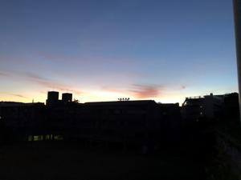
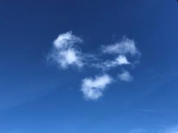
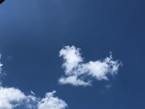
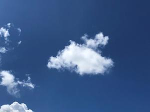

うるがいの話 ある日
最新: 熱中症対策
うるがいとは 前提知識です
カニの画像をクリックすると『うるがいの話』サイトを表示します
うるがい(ｳﾙｶﾞｲ urugai)とは、『もずくがに』の名前でとても大きくなります。
たながー（ﾀﾅｶﾞｰtanagaa）とは手長えびのことで、何種類かあり大きいのは車 エビぐらいになります。
ぶながー(bunagaa)とは、赤い髪の毛、赤い身体、そして身長は１ｍ２０ｃｍ ぐらい、川の蟹を食べているの目撃された。場所は沖縄県国頭郡大宜味村のと ある村僕の隣近所に住んでいる爺さんから、聞いた話です。
2021年09月08日 (水）
熱中症対策
16:47




昨日ヨメの病院への運転手をする。９時前に、駐車場につき１０時半頃には終
わるだろうと思って、車の中にいた。クラーを点ければすずしいのだが、さす
がにズート点けるわけにはと、窓ガラスを開ける。暑い！、暑い””、診察ま
だ？と１０時半にヨメにＳＭＳを投げる、全然マダと返信。やばい、これでは
熱中症になる（クラーは点けたくない）。車の外にでる、涼しい、車の中より
はるかに涼しい、でも日差しが強いので近くにビルの陰で時間を潰すことにす
る。雲をみる、ジートと観る、雲が生きものように変化している。やがてＳＭ
Ｓが来た。なかなか、面白かった。駐車場を出たのは１１時４０分だった、暑
い日は車の中で待つものでない！と毎回思っているのだが、忘れてしまう。